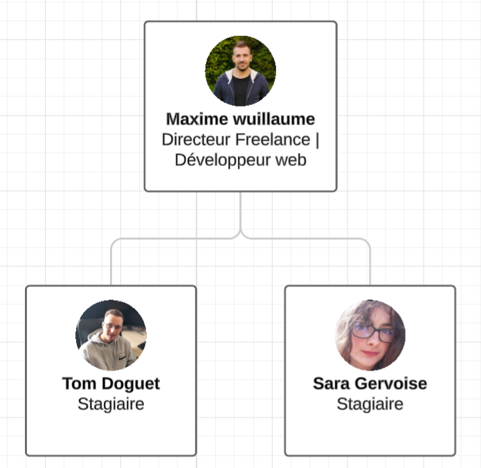

Remerciements
Je tiens à remercier M. Maxime WUILLAUME pour son encadrement et son soutien durant mon stage. Un grand merci également à mon enseignant référent M. Charles PIGUET pour ses conseils précieux.
Présentation de l'Entreprise
SENDIX est une micro-entreprise spécialisée dans le développement web et les services informatiques. Fondée en 2014, elle propose des services variés, allant de la création de sites web à la gestion de bases de données.
Projet Principal - Wisikard
Durant mon stage, j’ai participé à la refonte du projet Wisikard, une solution permettant de créer des cartes de visite numériques accessibles via QR Code.
Technologies utilisées :

Autres Missions
- Configuration d’une imprimante pour un client.
- Présentation du projet Wisikard à la CAPEB.
- Gravure de QR Codes Wisikard sur bois.
Compétences Développées
- Programmation web avancée (Laravel, JavaScript, SQL).
- Gestion de projet et travail en équipe (GitHub, Trello).
- Optimisation des bases de données et documentation technique.
Conclusion
Ce stage a été une expérience enrichissante qui m’a permis de perfectionner mes compétences techniques et organisationnelles. J’ai beaucoup appris sur le développement d’applications web et la gestion de projets en entreprise.